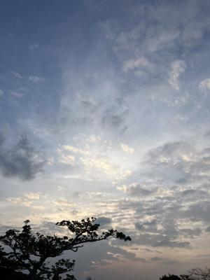
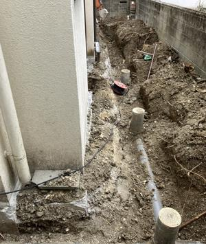

うるがいの話 ある日
最新: 冷水【うるがいの話 ある日】とは 一日だけのプログです
『うるがいの話』の最新一日だけのプログで、通信料が少なく経済的だ。カニの画像をクリックすると全ての日付が載る『うるがいの話』サイトを表示します
|
|
【うるがいの話】 うるがい(ｳﾙｶﾞｲ urugai)とは、『もずくがに』の名前でとても大きくなります。 |
|---|---|
|
|
【カミマヤーの話】 猫のことを方言でマヤーといいます。カミマヤー（kamimayaa）とは、神の猫のことです。 |
|
【たながぁの音楽】 たながぁ（ﾀﾅｶﾞｰ tanagaa）とは手長えびのことで、何種類かあり大きいのは車 エビぐらいになります。 |

|
【ぶながぁの話】 ぶながぁ(ﾌﾞﾅｶﾞｰ bunagaa)とは、赤い髪の毛、赤い身体、そして身長は１ｍ２０ｃｍ ぐらい、川の蟹を食べているの目撃された。場所は沖縄県国頭郡大宜味村のと ある村僕の隣近所に住んでいる爺さんから、聞いた話です。 |
|
|
【ギーマの話】 ギーマ(giima)とは、山原の里山に咲くスズランに似た、 花を付けます。実は食べられます、 気が付くと口の周りが紫になっています。 |
2025年11月26日 (水）冷水
16:23

お風呂のバスに貯めた水がもったいないので、ジョギングのあと
冷水で浴びた。寒い、寒かったです、今日は止めます。
お隣さんが、裏庭に沈みこんだ排水管が地盤沈下で曲がってしま
った。もとは、山の斜面に壁を作り、土を埋め込み造成した土地
に我々の新築住宅は、作られた。当時の大規模な工事を、見学し
たこともある。裏の土地には、畑にしていたが土が沈みコムので
２度ほど、トンレベルで土を小型トラックで購入し裏に足した。
それでも、１０センチほど沈み込んでいる。懇意にしているリフ
ォーム会社の社長さんに話すと、よくあることでそろそろ止まる
筈ですよと言われた。ま、いまさらトラックで土を足すには難儀
だし。
お隣なりさんは、当初の設計を変更したことが原因（変更内容は
知らない）で、こういうことになったらしい。数年前にガス漏れ
で、あのガスの匂い、大騒ぎしたことがあった。ガスの配管が曲
がったのがガス漏れの原因だった。ガス会社が来て、大掛かりな
工事をしていた。新築３２年で、この地盤沈下による工事大変だ
よな。お隣さんも畑を作っていた、跡形もない。

販売していた琉信ハウジングに、数年まえに擁壁がずれたせいで
ブロック塀にひび割れがあり、業者の立ち合いのもと責任を追求
したが、そもそも保証期間（５年？だったかな）も過ぎている、
会社名も変わったことなんでと言われた。フーン、土建業をして
いたら想定できたのではないかと思うのだが。